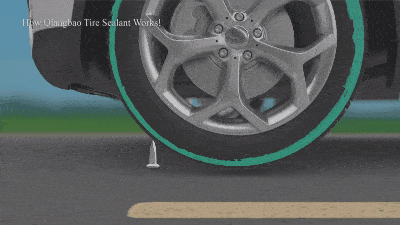
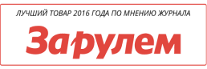
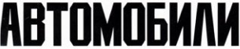

Polymax сохраняет свои свойства даже при низких (-25 градусов) температурах.
получить бесплатную консультацию
старая цена
1290 руб
1290 руб
цена сейчас
1290 руб
1290 руб
Polymax — это полимерный состав предназначенный для камерных и бескамерных шин, установленных на стальных, алюминиевых и магниевых дисках.
полимерный состав
против проколов
- МГНОВЕННО ЗАТЯГИВАЕТ ПРОКОЛЫ!
- ПОДХОДИТ ДЛЯ КАМЕРНЫХ И БЕСКАМЕРНЫХ КОЛЕС
- ремонт колеса без помощи сто!
успей заказать
со скидкой 50%
заказать по акции
со скидкой 50%
Polymax — надежная защита колес от случайных проколов в дороге и возможность без проблем добраться до ближайшего СТО. Полезная вещь в дальних поездках и по бездорожью.
получить бесплатную консультацию
Polymax — надежная защита колес от случайных проколов в дороге и возможность без проблем добраться до ближайшего СТО. Полезная вещь в дальних поездках и по бездорожью.
заказать
Принцип действия
Герметик заполняет прокол и самовулканизируется в нем. Внутри прокола образуется прочная пробка, аналогичная «сырой» резине.

В состав герметика входят: углеволокно, которое по своим характеристикам не уступает прочности стали, и полимеры, используемые в бронежилетах.
Во время вращения колеса центробежная сила равномерно распределяет АНТИПРОКОЛ внутри покрышки. При проколе давление воздуха выдавливает состав в отверстие. Волокнистая структура герметика мгновенно формирует эластичную и прочную пробку.

Образует эластичную, прочную пробку внутри прокола, аналогичную «сырой резине».
Простое применение
Вынуть золотник и спустить колеса, отрезать носик у бутылки, залить содержимое в колесо (вентиль колеса находится внизу), выкрутить золотник и накачать колесо до рабочего давления и проехать 2-3 км до равномерного распределения жидкости.
универсальное средство
о нас пишут


Один баллончик антипрокола (480 гр) — на 2 колеса R13 или на 1 колесо внедорожника или грузовика или R16.
Одной заправки герметика хватает на 8 проколов диаметром до 5 мм. Срок службы колес продлевается на 20-25%.
старая цена
1290 руб
1290 руб
цена сейчас
1290 руб
1290 руб
Polymax — это полимерный состав предназначенный для камерных и бескамерных шин, установленных на стальных, алюминиевых и магниевых дисках.
полимерный состав
против проколов
- МГНОВЕННО ЗАТЯГИВАЕТ ПРОКОЛЫ!
- ПОДХОДИТ ДЛЯ КАМЕРНЫХ И БЕСКАМЕРНЫХ КОЛЕС
- ремонт колеса без помощи сто!
успей заказать
со скидкой 50%
заказать по акции
со скидкой 50%
Отзывы наших покупателей
Любим с друзьями велопоходы. Колесим по бездорожью и естественно наши “кони” ловят колючки. Проколов просто не избежать. Увидел на сайте Polymax, решил попробовать. Откатал две недели без проблем. Рекомендую, действительно классная вещь.
Михаил Липкович, г. Минск
Теща живет в деревне. А какие там дороги? Естественно после поездки к ней часто приходилось на СТО машину пригонять - проколы устранять. Друг посоветовал залить Polymax как профилактику. Залил. Поехал к теще тест-драйв делать. Был приятно удивлен. Колеса целые, подкачивать не пришлось. Решил все-таки проверить на СТО. Оказывается были проколы, но..это средство с ними справилось на ура.
Виктор Митрохин, г. Москва
Я дальнобойщик. В дороге всякое бывает, а уж гвоздь поймать - это как дважды два. Шеф у меня интересуется всякими новинками для авто. Вот и услышал где-то про Polymax. Говорит: “ Давай Петрович испытаем на твоей машине чудо-средство”. Что могу сказать? В командировку съездил без проблем, с машиной все в порядке было. Когда приехал на базу, то механики обнаружили проколы в колесах, но закрытые этим средством. вообщем хорошая вещь, нужная.
Игорь, Электросталь
Мнение эксперта:
В ходе стендовых испытаний было выяснено, что превентивный герметик АНТИПРОКОЛ отвечает всем предъявленным требованиям. Это средство гарантированно заделывает проколы в протекторе. Данный состав может применяться как в камерных, так и бескамерных колесах. Средство может оставаться внутри шины круглый год, без уменьшения его эффективности.
Смирнов Игорь Николаевич, доктор технических наук, зав. лаборатории Государственного научного центра ФГУП "НАМИ"
доставка
ОПЛАТА ПРИ ПОЛУЧЕНИИ!